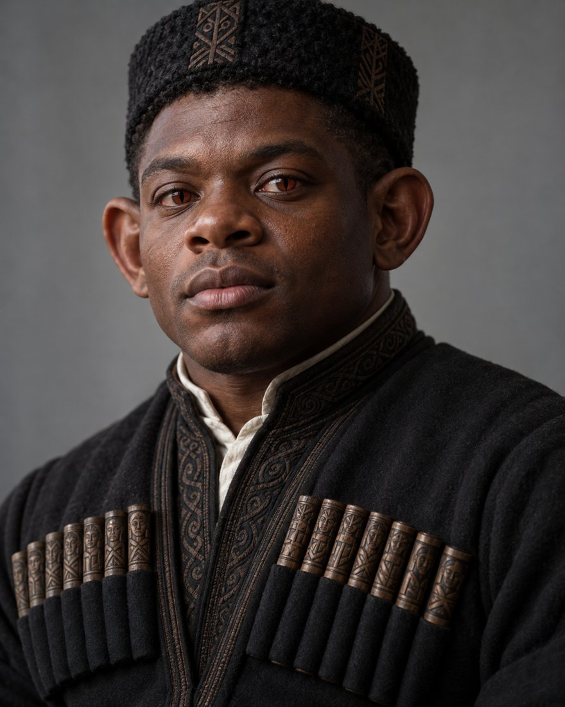

Mylzhfã

A sovereign people beneath a dry limestone plateau, safe because their land looks worthless.
Lines without a tag are settled canon from the Kanna reference documents. Tags mark anything less settled.
- Land
- A karst plateau at 25 to 45°N on the Rejfê continent, with caves, lava tubes and aquifers far larger than the surface footprint
- Government
- One sovereign polity, not part of any Rejfê tribe
- Language
- Mylzhfã, shaped by cave acoustics and Yoruba contact. Script undocumented.
- Skin
- #3d251e to #4c3228, the deepest in the family
- Clothing
- Georgian. The chokha coat (with cartridge rows adapted to grove and ancestor motifs) in the style of the Khevsureti and Mtiuleti mountain dancers: compact, explosive and knee-drop heavy.
The karst sovereignty
- Above ground: arid limestone, a former seabed pushed up, near-treeless and full of sinkholes and cave mouths. It looks worthless to outsiders.
- Below ground: huge cave networks, lava tubes, aquifers, settlements, glowing ley-supported grove farms and sacred burial-farming chambers. The sovereign cave network is far larger than the surface footprint.
- The land defends itself. The desert above has scarce water, and a handful of cave mouths act as chokepoints. That is why they were never conquered.
- Rain falling on the plateau soaks down into the aquifers. They have water because the surface is dry, while anyone standing on top is dying of thirst.
Why they are the most orthodox
Underground there is no sunlight, no photosynthesis and no farming. For the Mylzhfã, Grombaer's rite was never symbolic. It was the food supply, the only closed loop available, and for centuries the burial cycle was literally dinner. Other peoples had fields and sun, so their rite could drift toward symbol. The Mylzhfã orthodoxy is not piety. It is what survives when a practice carries the load. It also explains why they hold the most complete Stamfaen records of any living people. Canon
Body and build
- Short and compact, 4'8" to 5'8", with a rugby build, from generations of underground compression. Their large ears need real changes to headwear.
- They are the people most likely to develop the strongest toe flexibility, since climbing and working in the dark rewards it.
- Dual-set people are unusually common, about 60%. Gestation runs 20 to 22 months.
Body
- Gestation
- 20 to 22 months
- Pupil
- Large and round, narrowing to a vertical slit in bright light
- Iris
- Grebe carmine
- Ears
- Large and close to the skull; they move independently, and letting someone wash them is a sign of deep trust
- Tongue
- Narrower than human, pink, rough; can curl and undulate to help echolocation
- Blood
- Blue (copper-based, suited to low oxygen)
- Nose
- Broad
- Teeth
- Standard
- Arms
- 2
- Spine
- Cat-like, with extra thoracic flex for sustained forward posture
- Joints
- Some double-jointed individuals, otherwise human typical
- Strongest sense
- Hearing (best in the family), plus echolocation through ears and tongue
- Body hair
- A fine layer across the body that senses tiny air movements in tunnels
- Build (masc)
- Rugby
- Build (femme)
- Rugby
- Height
- 4'8" to 5'8"
- Height by sex
- The same across expressions
- Skin tone
- #3d251e to #4c3228 (the deepest)
- Markings
- None
- Lifespan
- 400 to 700
- Active period
- Underground cycles replace lunar and solar
Still to decide
- Sentence structure and word order are assumed to be subject-verb-object from Stamfaen, but not confirmed. Open
- Demonstratives and interrogatives are undeveloped. Open
- The script is undocumented. Open